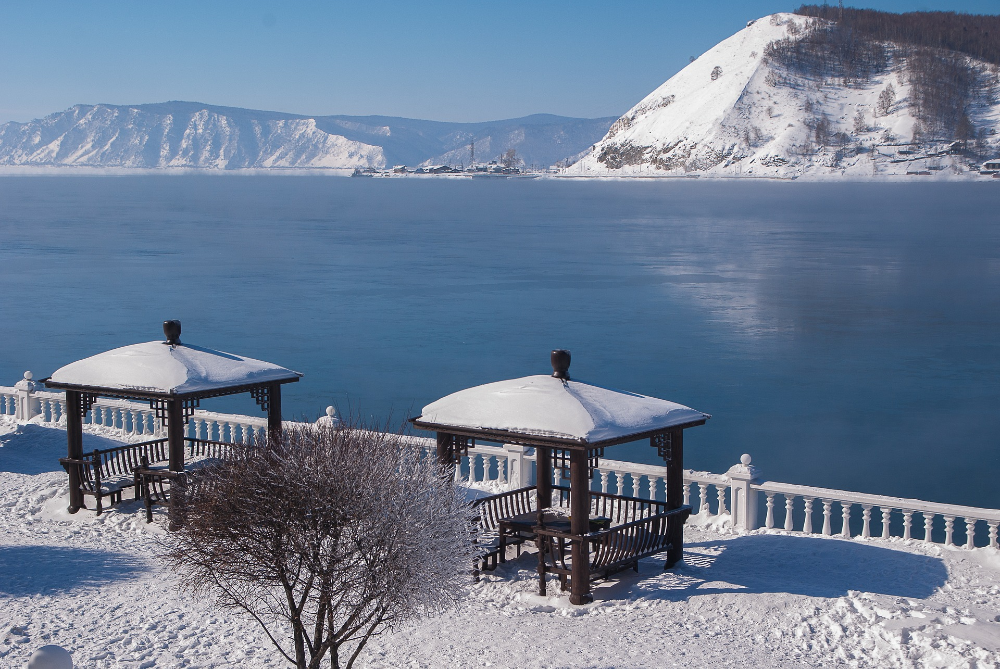
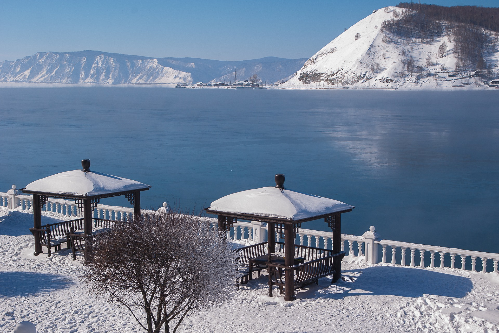

Que visiter en mère Patrie aka Russie ?
À cheval sur deux continents et neuf fuseaux horaires, la Russie est le plus grand pays du monde. À la fois très riche en patrimoine culturel et en espaces naturels, c’est un voyage qui réserve de très nombreuses surprises. Les amoureux d’histoire et de musées tomberont amoureux de Saint-Pétersbourg, l’ancienne capitale des tsars, tandis que les amateurs de grandes villes dynamiques et modernes ne jureront que par Moscou, la frénétique mégalopole de la nouvelle Russie. C’est un pays qu’on peut découvrir du Nord au Sud : des immenses lacs de Carélie jusqu’aux plages de la mer Noire, en passant par les rives de la Volga. Mais aussi d’ouest en est, en empruntant la ligne mythique du Transsibérien, à la découverte des monastères de l’Anneau d’Or, de la taïga de Sibérie, du lac Baïkal, avant d’arriver au terminus du bout du monde : Vladivostok. Sans oublier la région la plus difficile d’accès d’un voyage en Russie : le Kamtchatka, terre de feu et de glace, véritable territoire d’exploration pour les aventuriers. Après plusieurs longs voyages en Russie, dans cet immense pays. Il serait bien évidemment impensable de vouloir tous les visiter en un seul séjour. La Russie mérite qu’on y revienne, une fois qu’on a succombé à ses charmes.
 

Un peu de pop culture...!

La Russie sur Internet (voir déf sur la pop culture) est connue pour ses danses folklorique, la vodka, les tanks et autres "memes" sur Vladimir Poutine... Si déja ça ne vous donne pas l'envie de decouvrir ce grand pays, allez dessous pour decouvrir la gastronomie russes. :)
La gastronomie Russe
La principale caractéristique de la cuisine russe est l'abondance et la variété des produits utilisés pour la cuisson. Il existe une variété de plats de pâte au levain tels que des tartes, des gâteaux, des scones, des crêpes ainsi que de pâte sans levain, y compris des pelmenis faits maison. Comme la Russie est un pays de religion orthodoxe qui observe le carême, la cuisine russe offre un nombre important de plats végétariens, y compris les champignons, les cornichons, etc. La palette culinaire russe est riche en plats de viande, de volaille et de poisson servis à diverses occasions.
Caviar
Le caviar le plus cher au monde, c’est le beluga. Ces poissons se trouvent principalement dans la mer Caspienne et sont extrêmement rares. Ce caviar noir ne peut être trouvé que dans certaines épiceries fines, comme l'Épicerie Elisseeff ou Goum. Le caviar rouge est beaucoup plus abordable. Vous pouvez le trouver dans de nombreuses épiceries ou restaurants. Nous vous recommandons d'essayer le caviar avec des crêpes russes (blini).
Bortsch
Le bortsch est une soupe populaire dans de nombreux pays d'Europe de l'est. Vous pouvez le reconnaître par sa couleur pourpre rougeâtre et son goût aigre-doux. En Russie, cette soupe est connue depuis des centaines d'années. L'ingrédient principal de cette soupe est la betterave.
Blini
Les blinis, c’est une sorte de crêpes. Ils sont généralement minces et gros, ils peuvent être servis avec de la crème, de la confiture, du miel, du caviar, du saumon fumé et de nombreux autres ingrédients. Les russes les mangent à différents repas comme hors-d'œuvre, dessert ou même plat principal.
Pirog
Le pirog est une grande tarte russe qui peut avoir une garniture piquante ou sucrée. En plus de la grande variété de pâte (choucroute, feuilletée ou biscuit), il existe également différents types de tartes (farcies sur le dessus ou à l'intérieur). Certains types de tartes sont spécialement préparés pour certaines célébrations, telles que le matchmaking ou les commémorations. Les pirojkis sont des versions réduites du pirog qui peuvent être cuites ou frites. Les garnitures habituelles comprennent la viande hachée, la purée de pommes de terre, les champignons, le chou frisé et les fruits ou la confiture.